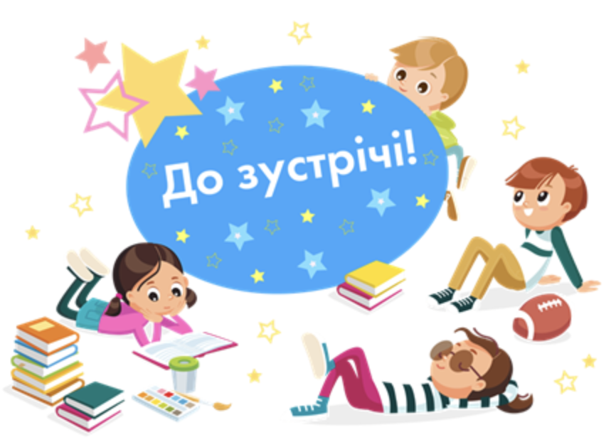

Тема 3. Будова слова
Урок 20. Утворення нових слів із найуживанішими суфіксами зменшення, здрібнілості, пестливості
Сьогодні на уроці ти пригадаєш, як писати префікси, а також дізнаєшся про роль суфіксів та їх написання, навчишся утворювати нові слова за допомогою суфіксів, будеш виконувати цікаві завдання.
Відео, сторінка 1
Відео, сторінка 2
Контрольні питання
